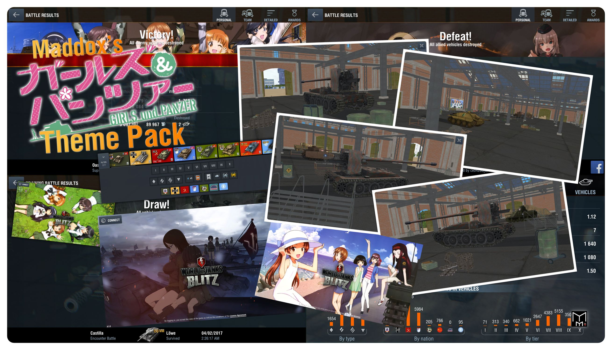

Maddox’s Girls Und Panzer Theme Pack
Creator
Mod Information
- ID: common.pack.projekt_gup
- Description: Description: This is the Custom Hangar Imported from WoT x GuP Collboration Mod, Custom Garage Music, Custom Battle Result Banner, Custom National Flags,
Queue screen background, Custom Loading Logo, etc...
Sample Image
